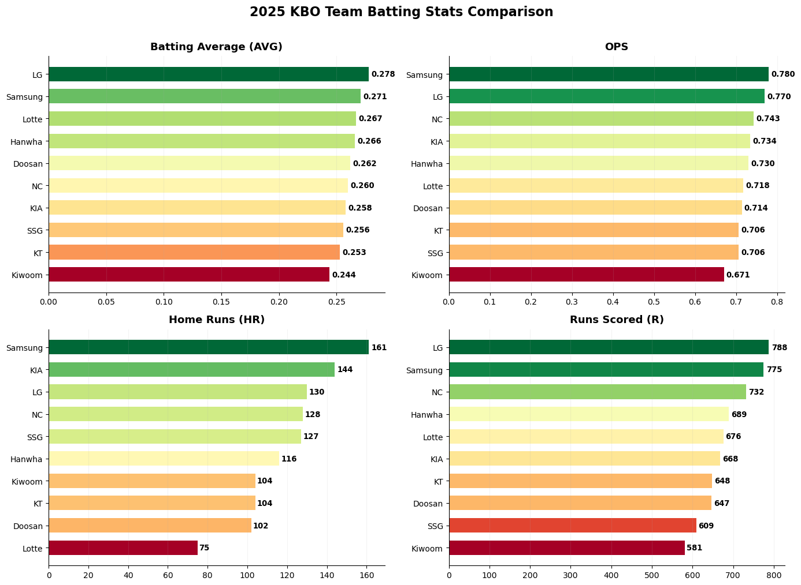
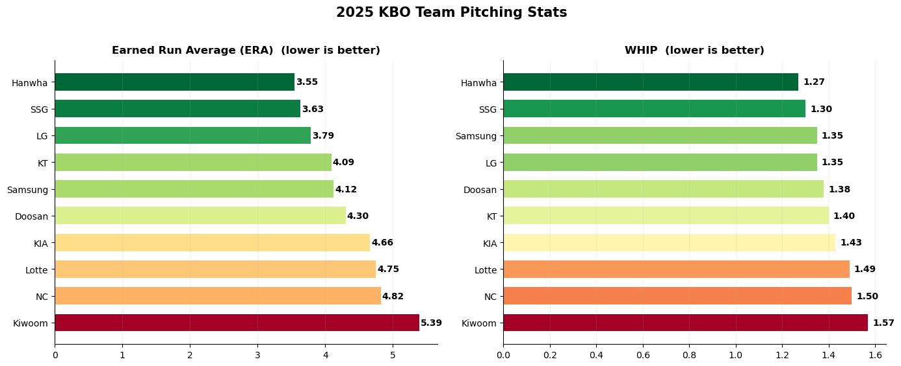
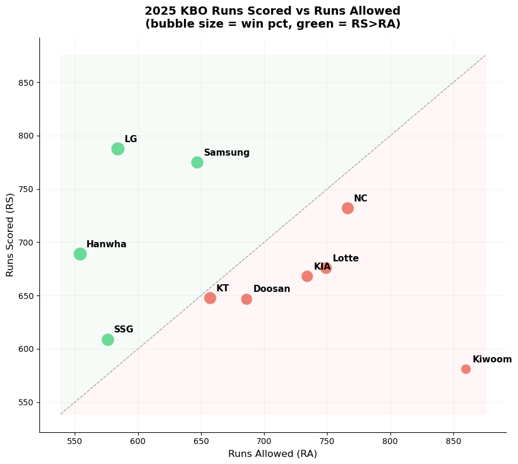
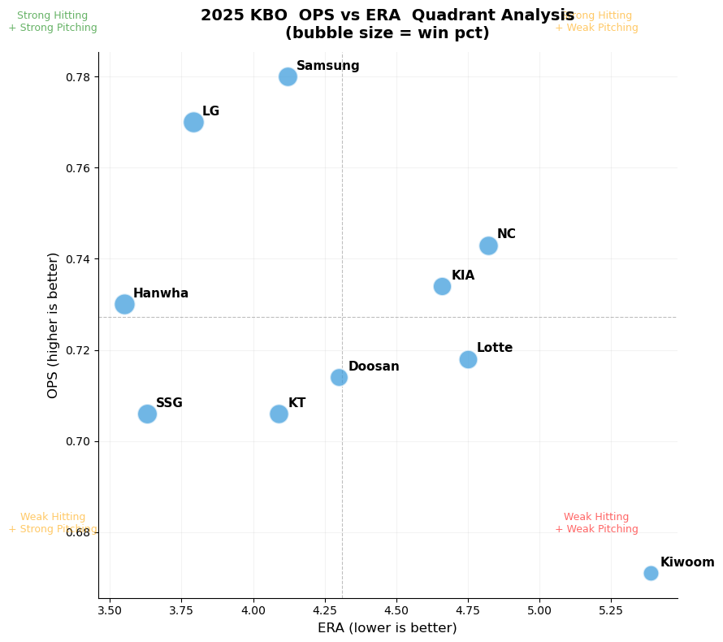
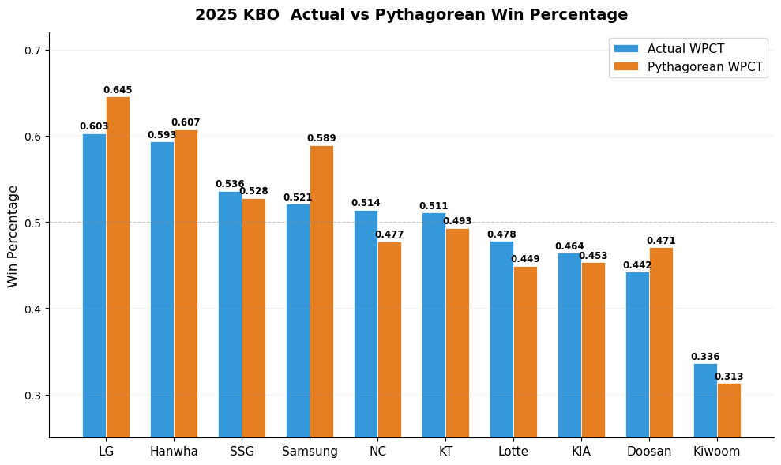
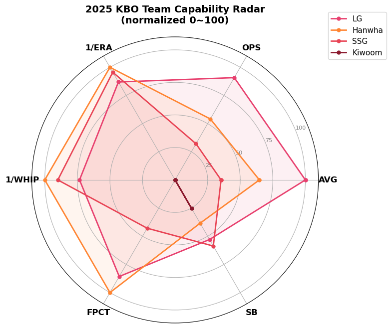

3장 KBO 정규시즌 팀성적 분석#
1. 2025 KBO 정규시즌 팀 기록 입력#

출처: KBO 기록실 (스크린샷 이미지 파일 6개를 업로드함)
Claude 데이터세트 구축: 엑셀 파일#
2025 KBO 정규시즌 팀기록 데이터세트를 6개 시트로 정리했습니다.
타자기록(1): AVG, G, PA, AB, R, H, 2B, 3B, HR, TB, RBI, SAC, SF
타자기록(2): BB, IBB, HBP, SO, GDP, SLG, OBP, OPS, MH, RISP, PH-BA
투수기록(1): ERA, W, L, SV, HLD, WPCT, IP, H, HR, BB, HBP, SO, R, ER, WHIP
투수기록(2): CG, SHO, QS, BSV, TBF, NP, AVG, 2B, 3B, SAC, SF, IBB, WP, BK
수비기록: E, PKO, PO, A, DP, FPCT, PB, SB, CS, CS%
주루기록: SBA, SB, CS, SB%, OOB, PKO
각 시트에 10개 팀 데이터와 합계가 포함되어 있습니다.
2. 탐색적 데이터 분석#
Claude 제공#
🔗 KBO 정규시즌 팀성적 분석 대시보드 (https://claude.ai/public/artifacts/e413b6d6-4472-489d-af2e-e848e0a1791b)

3. 탐색적 데이터 분석: 파이썬 분석#
Claude 분석#
10개 구단 · 144경기 · 타격 / 투구 / 수비 / 주루 종합 분석
1. 데이터 로딩#
2. 기술 통계량#
지표 |
평균 |
표준편차 |
최소 |
최대 |
|---|---|---|---|---|
AVG |
.262 |
.010 |
.244 |
.278 |
OPS |
.727 |
.032 |
.671 |
.780 |
HR |
119.1 |
24.4 |
75 |
161 |
R (득점) |
681.3 |
67.1 |
581 |
788 |
ERA |
4.31 |
0.59 |
3.55 |
5.39 |
WHIP |
1.40 |
0.09 |
1.27 |
1.57 |
FPCT |
.980 |
.003 |
.977 |
.984 |
SB |
107.8 |
38.9 |
48 |
186 |
3. 팀 승률 순위#

LG(.603)와 한화(.593)가 5할 이상 승률로 상위 2팀. 키움(.336)은 리그 유일의 3할대 승률로 최하위. 점선(0.500)을 기준으로 상위 6팀과 하위 4팀이 명확히 구분된다.
4. 타격 지표 비교 (AVG, OPS, HR, R)#

AVG: LG(.278) 압도적 1위. 키움(.244) 유일한 2할 4푼대
OPS: 삼성(.780) 1위 — 타율 1위 LG(.770)를 앞섬 → 장타력 차이
HR: 삼성(161) 리그 최다. 롯데(75) 최소로 2배 이상 격차
R: LG(788) 최다 득점. 키움(581) 최소 — 207점 차이
5. 투구 지표 — ERA & WHIP#

ERA: 한화(3.55) 리그 1위. 키움(5.39) 유일한 5점대 → 1.84점 차이
WHIP: 한화(1.27) 역시 1위. 한화 투수진의 전반적 우수성이 뚜렷
상위 3팀(한화/SSG/LG)과 하위권 간 ERA 격차가 약 1점 이상
6. 득점 vs 실점#

대각선 위(초록 영역) = 득점 > 실점. LG/한화/삼성이 대각선 위에 뚜렷이 위치. 키움은 실점(860)이 극단적으로 높아 우하단에 고립. NC는 득점(732)이 높지만 실점(766)도 높아 대각선 바로 아래.
7. OPS vs ERA — 사분면 분석#

점선 교차점 = 리그 평균(OPS .727, ERA 4.31). 좌상 사분면(높은 OPS + 낮은 ERA)이 가장 이상적.
LG: 유일하게 좌상에 확실히 위치 → 공수 모두 우수
한화: ERA 최저이나 OPS는 평균 부근 → 투수 중심 팀
삼성: OPS 최고이나 ERA는 평균 초과 → 공격 중심 팀
키움: 우하 사분면 고립 → 공수 모두 최하위
8. 실제 승률 vs 피타고리안 기대 승률#

피타고리안 승률 = RS² / (RS² + RA²).
삼성: 기대(.589) ≫ 실제(.521) → 득실차 대비 승률이 낮음. 접전 약세 또는 대량 득점 경기 편중 가능성
NC: 기대(.477) < 실제(.514) → 접전에서 강한 팀. 불펜/클러치 능력 시사
LG: 기대(.645) > 실제(.603) → 득실차 대비 약간 불운
9. 타격 지표 상관관계 히트맵#

OPS ↔ R (0.96): OPS가 득점과 가장 강한 상관 → 팀 공격력의 핵심 지표
OBP ↔ R (0.93): 출루율이 장타율(0.88)보다 득점에 더 중요
SO ↔ AVG (-0.71): 삼진이 많을수록 타율이 낮음 → 컨택 능력의 중요성
HR ↔ AVG (0.27): 홈런은 타율과 거의 무관 → 파워와 컨택은 별개
SO ↔ HR (0.13): 삼진과 홈런은 거의 무상관
10. 승률 결정 요인#

승률과 가장 강한 양의 상관: 득실차 > 득점 > OPS. 가장 강한 음의 상관: ERA > WHIP > 실책. 투수력(ERA/WHIP)의 음의 상관이 타격력(AVG/OPS)의 양의 상관보다 절대값이 크다 → 투수력이 승률에 더 결정적.
11. 팀 역량 레이더 차트#

6개 지표를 0~100으로 정규화 (ERA/WHIP은 역수 처리).
LG: AVG/OPS 최상위 + 투구/수비 상위 → 가장 균형 잡힌 팀
한화: 1/ERA · 1/WHIP · FPCT 최상위 → 투수·수비 중심
SSG: 투구 상위, 타격 하위 → 투수력 의존
키움: 전 영역 최하위 → 전면 재건 필요
12. 수비 · 주루 지표#

실책(E): 한화(86) 최소 → 수비 안정성. KIA(123) 최다
수비율(FPCT): 한화/삼성(.984) 공동 1위. 하위팀 간 차이는 미미(.977)
도루(SB): NC(186)가 2위 두산(144)보다 42개 앞서 압도적. KT(48) 최저
도루 성공률(SB%): 키움(84.7%) 1위 → 시도 자체는 적지만 효율적
13. 득실차#

LG(+204) 압도적 1위. 한화(+135)와 삼성(+128)이 뒤를 이음. 키움(-279)은 다른 하위팀과도 비교 불가한 수준. 5할 이상 팀 중 NC(-34)와 KT(-9)는 득실차가 마이너스임에도 승률은 5할 이상 → 접전 승률이 높았음을 시사.
14. 종합 정리#
핵심 발견#
발견 |
근거 |
|
|---|---|---|
1 |
OPS가 득점을 가장 잘 예측하는 타격 지표 |
OPS↔R 상관계수 0.96 |
2 |
출루율(OBP)이 장타율(SLG)보다 득점에 더 중요 |
OBP↔R 0.93 > SLG↔R 0.88 |
3 |
투수력이 타격보다 승률에 더 결정적 |
ERA↔승률 음의 상관이 OPS↔승률 양의 상관보다 절대값이 큼 |
4 |
삼성의 피타고리안 역설 |
기대승률 .589 vs 실제 .521 — 득실차에 비해 승률이 현저히 낮음 |
5 |
NC의 적극적 주루 |
도루 186개로 리그 1위, 2위(두산 144)와 42개 차이 |
팀별 프로필#
팀 |
승률 |
핵심 강점 |
핵심 약점 |
|---|---|---|---|
LG |
.603 |
타율 1위, 최다 득점 |
홈런 3위 |
한화 |
.593 |
ERA/WHIP/수비율 모두 1위 |
OPS 5위 |
SSG |
.536 |
ERA 2위, WHIP 2위 |
OPS 8위, 득점 9위 |
삼성 |
.521 |
OPS/HR/수비율 1위 |
ERA 5위, 피타고리안 괴리 |
NC |
.514 |
도루 압도적 1위(186) |
ERA 9위, WHIP 9위 |
KT |
.511 |
QS 1위(74) |
도루 최하위(48) |
롯데 |
.478 |
2루타 1위 |
홈런 최하위(75), ERA 8위 |
KIA |
.464 |
홈런 2위(144) |
실책 최다(123) |
두산 |
.442 |
도루 2위(144) |
ERA 6위 |
키움 |
.336 |
도루 성공률 1위(84.7%) |
전 부문 최하위권, 득실차 -279 |
참고: 파이썬 코드#
import pandas as pd
import numpy as np
import matplotlib.pyplot as plt
import matplotlib as mpl
## 1. 데이터 로딩
# 엑셀 파일에서 각 시트 읽기
xls = pd.ExcelFile('../Data/2025_KBO_팀기록_데이터세트.xlsx')
bat1 = pd.read_excel(xls, '타자기록(1)')
bat2 = pd.read_excel(xls, '타자기록(2)')
pit1 = pd.read_excel(xls, '투수기록(1)')
pit2 = pd.read_excel(xls, '투수기록(2)')
defense = pd.read_excel(xls, '수비기록')
baserun = pd.read_excel(xls, '주루기록')
# 합계 행 제거
for frame in [bat1, bat2, pit1, pit2, defense, baserun]:
frame.drop(frame[frame['순위'] == '합계'].index, inplace=True)
# 타격 테이블 병합
batting = bat1.merge(
bat2[['팀명','BB','IBB','HBP','SO','GDP','SLG','OBP','OPS','RISP','PH-BA']], on='팀명')
# 투수 테이블 정리
pitching = pit1[['팀명','ERA','W','L','SV','HLD','WPCT','H','HR','BB','HBP','SO','R','ER','WHIP']].copy()
pitching.columns = ['팀명','ERA','W','L','SV','HLD','WPCT','H_a','HR_a','BB_p','HBP_p','SO_p','R_a','ER','WHIP']
pit2_sub = pit2[['팀명','QS','BSV','TBF','NP','AVG']].copy()
pit2_sub.columns = ['팀명','QS','BSV','TBF','NP','oAVG']
pitching = pitching.merge(pit2_sub, on='팀명')
# 마스터 테이블 생성
df = (batting
.merge(pitching, on='팀명')
.merge(defense[['팀명','E','FPCT','DP','PB']], on='팀명')
.merge(baserun[['팀명','SBA','SB','CS','SB%']], on='팀명'))
# 파생 변수
df['RS_RA_diff'] = df['R'] - df['R_a'] # 득실차
df['Pythagorean'] = df['R']**2 / (df['R']**2 + df['R_a']**2) # 피타고리안 기대승률
# 그래프용 영어 팀명
TEAM_EN = {'LG':'LG','삼성':'Samsung','롯데':'Lotte','한화':'Hanwha',
'두산':'Doosan','NC':'NC','KIA':'KIA','SSG':'SSG','KT':'KT','키움':'Kiwoom'}
df['team_en'] = df['팀명'].map(TEAM_EN)
df = df.sort_values('WPCT', ascending=False).reset_index(drop=True)
## 2. 기술 통계량
df[['AVG','OPS','HR','R','ERA','WHIP','SO_p','FPCT','E','SB']].describe().round(3)
## 3. 팀 승률 순위
# 팀 승률 순위 수평 바 차트
fig, ax = plt.subplots(figsize=(10, 6))
s = df.sort_values('WPCT', ascending=True)
colors = ['#2ecc71' if v >= 0.5 else '#e74c3c' for v in s['WPCT']]
bars = ax.barh(s['team_en'], s['WPCT'], color=colors, height=0.65, edgecolor='white', linewidth=0.5)
ax.axvline(x=0.5, color='#888', linewidth=1, linestyle='--', alpha=0.7)
# 수치 라벨
for bar, val in zip(bars, s['WPCT']):
ax.text(bar.get_width() + 0.005, bar.get_y() + bar.get_height()/2,
f'{val:.3f}', va='center', fontsize=11, fontweight='bold')
ax.set_title('2025 KBO Team Win Percentage Ranking', fontsize=15, fontweight='bold', pad=12)
ax.set_xlabel('Win Percentage (WPCT)', fontsize=12)
ax.set_xlim(0, 0.68)
ax.spines[['top','right']].set_visible(False)
ax.grid(axis='x', alpha=0.2)
plt.tight_layout()
plt.show()
## 4. 타격 지표 비교 (AVG, OPS, HR, R)
# 타격 4대 지표 비교 (2x2 서브플롯)
fig, axes = plt.subplots(2, 2, figsize=(14, 10))
metrics = [('AVG','Batting Average (AVG)'), ('OPS','OPS'),
('HR','Home Runs (HR)'), ('R','Runs Scored (R)')]
cmap = plt.cm.RdYlGn # 높을수록 좋은 지표에 녹색
for ax, (col, title) in zip(axes.flat, metrics):
s = df.sort_values(col, ascending=True)
vals = s[col].values
norm = (vals - vals.min()) / (vals.max() - vals.min()) # 정규화
colors = [cmap(n) for n in norm]
bars = ax.barh(s['team_en'], s[col], color=colors, height=0.65)
ax.set_title(title, fontsize=13, fontweight='bold', pad=8)
ax.spines[['top','right']].set_visible(False)
ax.grid(axis='x', alpha=0.15)
for bar, val in zip(bars, s[col]):
fmt = f'{val:.3f}' if val < 1 else str(int(val))
ax.text(bar.get_width()+(bar.get_width()*0.008),
bar.get_y()+bar.get_height()/2, fmt,
va='center', fontsize=9.5, fontweight='bold')
fig.suptitle('2025 KBO Team Batting Stats Comparison', fontsize=16, fontweight='bold', y=1.01)
plt.tight_layout()
plt.show()
## 5. 투구 지표 — ERA & WHIP
# ERA & WHIP 수평 바 차트
fig, axes = plt.subplots(1, 2, figsize=(14, 5.5))
cmap_r = plt.cm.RdYlGn_r # 낮을수록 좋으니 역순 컬러맵
for ax, (col, title) in zip(axes, [('ERA','Earned Run Average (ERA)'),
('WHIP','WHIP')]):
s = df.sort_values(col, ascending=False)
vals = s[col].values
norm = (vals - vals.min()) / (vals.max() - vals.min())
colors = [cmap_r(n) for n in norm]
bars = ax.barh(s['team_en'], s[col], color=colors, height=0.65)
ax.set_title(title + ' (lower is better)', fontsize=12, fontweight='bold', pad=8)
ax.spines[['top','right']].set_visible(False)
ax.grid(axis='x', alpha=0.15)
for bar, val in zip(bars, s[col]):
ax.text(bar.get_width()+0.02, bar.get_y()+bar.get_height()/2,
f'{val:.2f}', va='center', fontsize=10, fontweight='bold')
fig.suptitle('2025 KBO Team Pitching Stats', fontsize=15, fontweight='bold', y=1.02)
plt.tight_layout()
plt.show()
## 6. 득점 vs 실점
# 득점 vs 실점 버블 차트
fig, ax = plt.subplots(figsize=(9, 8))
for _, row in df.iterrows():
color = '#2ecc71' if row['RS_RA_diff'] > 0 else '#e74c3c'
ax.scatter(row['R_a'], row['R'], s=row['WPCT']*500,
c=color, alpha=0.7, edgecolors='white', linewidth=1.5, zorder=3)
ax.annotate(row['team_en'], (row['R_a'], row['R']),
textcoords="offset points", xytext=(8, 8),
fontsize=11, fontweight='bold')
# 대각선 (득점 = 실점)
lims = [min(ax.get_xlim()[0], ax.get_ylim()[0]),
max(ax.get_xlim()[1], ax.get_ylim()[1])]
ax.plot(lims, lims, 'k--', alpha=0.3, linewidth=1, zorder=1)
ax.fill_between(lims, lims, lims[1], alpha=0.03, color='green', zorder=0)
ax.fill_between(lims, lims[0], lims, alpha=0.03, color='red', zorder=0)
ax.set_xlabel('Runs Allowed (RA)', fontsize=12)
ax.set_ylabel('Runs Scored (RS)', fontsize=12)
ax.set_title('2025 KBO Runs Scored vs Runs Allowed\n(bubble size = win pct, green = RS>RA)',
fontsize=14, fontweight='bold', pad=12)
ax.spines[['top','right']].set_visible(False)
ax.grid(alpha=0.15)
plt.tight_layout()
plt.show()
## 7. OPS vs ERA — 사분면 분석
# OPS vs ERA 사분면 산점도
fig, ax = plt.subplots(figsize=(9, 8))
ops_mean, era_mean = df['OPS'].mean(), df['ERA'].mean()
for _, row in df.iterrows():
ax.scatter(row['ERA'], row['OPS'], s=row['WPCT']*600,
c='#3498db', alpha=0.7, edgecolors='white', linewidth=1.5, zorder=3)
ax.annotate(row['team_en'], (row['ERA'], row['OPS']),
textcoords="offset points", xytext=(8, 6),
fontsize=11, fontweight='bold')
# 리그 평균 기준선
ax.axhline(y=ops_mean, color='gray', linewidth=0.8, linestyle='--', alpha=0.5)
ax.axvline(x=era_mean, color='gray', linewidth=0.8, linestyle='--', alpha=0.5)
# 사분면 라벨
ax.text(3.3, 0.79, 'Strong Hitting\n+ Strong Pitching', fontsize=9, color='green', alpha=0.6, ha='center')
ax.text(5.2, 0.79, 'Strong Hitting\n+ Weak Pitching', fontsize=9, color='orange', alpha=0.6, ha='center')
ax.text(3.3, 0.68, 'Weak Hitting\n+ Strong Pitching', fontsize=9, color='orange', alpha=0.6, ha='center')
ax.text(5.2, 0.68, 'Weak Hitting\n+ Weak Pitching', fontsize=9, color='red', alpha=0.6, ha='center')
ax.set_xlabel('ERA (lower is better)', fontsize=12)
ax.set_ylabel('OPS (higher is better)', fontsize=12)
ax.set_title('2025 KBO OPS vs ERA Quadrant Analysis\n(bubble size = win pct)',
fontsize=14, fontweight='bold', pad=12)
ax.spines[['top','right']].set_visible(False)
ax.grid(alpha=0.15)
plt.tight_layout()
plt.show()
## 8. 실제 승률 vs 피타고리안 기대 승률
# 실제 승률 vs 피타고리안 기대 승률
fig, ax = plt.subplots(figsize=(10, 6))
s = df.sort_values('WPCT', ascending=False)
x = np.arange(len(s))
w = 0.35
bars1 = ax.bar(x - w/2, s['WPCT'], w, label='Actual WPCT',
color='#3498db', edgecolor='white', linewidth=0.5)
bars2 = ax.bar(x + w/2, s['Pythagorean'], w, label='Pythagorean WPCT',
color='#e67e22', edgecolor='white', linewidth=0.5)
for bar, val in zip(bars1, s['WPCT']):
ax.text(bar.get_x()+bar.get_width()/2, bar.get_height()+0.005,
f'{val:.3f}', ha='center', fontsize=8.5, fontweight='bold')
for bar, val in zip(bars2, s['Pythagorean']):
ax.text(bar.get_x()+bar.get_width()/2, bar.get_height()+0.005,
f'{val:.3f}', ha='center', fontsize=8.5, fontweight='bold')
ax.set_xticks(x)
ax.set_xticklabels(s['team_en'], fontsize=11)
ax.set_ylabel('Win Percentage', fontsize=12)
ax.set_title('2025 KBO Actual vs Pythagorean Win Percentage',
fontsize=14, fontweight='bold', pad=12)
ax.set_ylim(0.25, 0.72)
ax.legend(fontsize=11)
ax.spines[['top','right']].set_visible(False)
ax.grid(axis='y', alpha=0.15)
ax.axhline(y=0.5, color='gray', linewidth=0.8, linestyle='--', alpha=0.4)
plt.tight_layout()
plt.show()
## 9. 타격 지표 상관관계 히트맵
# 타격 지표 간 상관관계 히트맵
corr_cols = ['AVG','OBP','SLG','OPS','HR','BB','SO','R']
corr = df[corr_cols].corr()
fig, ax = plt.subplots(figsize=(9, 7.5))
im = ax.imshow(corr.values, cmap='RdBu_r', vmin=-1, vmax=1, aspect='equal')
ax.set_xticks(range(len(corr_cols)))
ax.set_yticks(range(len(corr_cols)))
ax.set_xticklabels(corr_cols, fontsize=11, fontweight='bold')
ax.set_yticklabels(corr_cols, fontsize=11, fontweight='bold')
# 셀 안에 상관계수 표시
for i in range(len(corr_cols)):
for j in range(len(corr_cols)):
val = corr.values[i, j]
color = 'white' if abs(val) > 0.5 else 'black'
ax.text(j, i, f'{val:.2f}', ha='center', va='center',
fontsize=10, fontweight='bold', color=color)
cbar = plt.colorbar(im, ax=ax, shrink=0.8)
cbar.set_label('Correlation', fontsize=11)
ax.set_title('2025 KBO Batting Stats Correlation Heatmap',
fontsize=14, fontweight='bold', pad=12)
plt.tight_layout()
plt.show()
## 10. 승률 결정 요인
# 승률과 각 지표의 상관계수
corr_cols = ['AVG','OPS','HR','R','BB','SO','ERA','WHIP','SO_p','FPCT','E','SB','RS_RA_diff']
labels = ['AVG','OPS','HR','Runs','BB','SO(bat)','ERA','WHIP','SO(pit)','FPCT','Errors','SB','Run Diff']
win_corr = df[corr_cols].corrwith(df['WPCT'])
# 정렬
sorted_idx = win_corr.argsort()
sorted_corr = win_corr.values[sorted_idx]
sorted_labels = [labels[i] for i in sorted_idx]
fig, ax = plt.subplots(figsize=(10, 7))
colors = ['#e74c3c' if v < 0 else '#2ecc71' for v in sorted_corr]
bars = ax.barh(sorted_labels, sorted_corr, color=colors, height=0.6,
edgecolor='white', linewidth=0.5)
ax.axvline(x=0, color='#333', linewidth=0.8)
for bar, val in zip(bars, sorted_corr):
x_pos = bar.get_width() + 0.02 if val >= 0 else bar.get_width() - 0.06
ax.text(x_pos, bar.get_y()+bar.get_height()/2,
f'{val:.3f}', va='center', fontsize=10, fontweight='bold')
ax.set_title('Correlation of Each Stat with Win Percentage (WPCT)',
fontsize=14, fontweight='bold', pad=12)
ax.set_xlabel('Pearson Correlation Coefficient', fontsize=12)
ax.set_xlim(-1, 1)
ax.spines[['top','right']].set_visible(False)
ax.grid(axis='x', alpha=0.15)
plt.tight_layout()
plt.show()
## 11. 팀 역량 레이더 차트
# 팀 역량 레이더 차트
def normalize(series, invert=False):
mn, mx = series.min(), series.max()
if mx == mn: return pd.Series([0.5]*len(series))
n = (series - mn) / (mx - mn)
return 1 - n if invert else n
radar_df = pd.DataFrame({
'team_en': df['team_en'],
'AVG': normalize(df['AVG']),
'OPS': normalize(df['OPS']),
'ERA_inv': normalize(df['ERA'], invert=True), # ERA 역수
'WHIP_inv': normalize(df['WHIP'], invert=True), # WHIP 역수
'FPCT': normalize(df['FPCT']),
'SB': normalize(df['SB']),
})
categories = ['AVG','OPS','1/ERA','1/WHIP','FPCT','SB']
cat_keys = ['AVG','OPS','ERA_inv','WHIP_inv','FPCT','SB']
N = len(categories)
angles = np.linspace(0, 2*np.pi, N, endpoint=False).tolist()
angles += angles[:1] # 닫힌 다각형
compare = ['LG','Hanwha','SSG','Kiwoom']
colors_r = ['#e8416f','#ff8533','#e84455','#8b1a2e']
fig, ax = plt.subplots(figsize=(8, 8), subplot_kw=dict(polar=True))
for team, color in zip(compare, colors_r):
row = radar_df[radar_df['team_en'] == team].iloc[0]
vals = [row[k] for k in cat_keys] + [row[cat_keys[0]]]
ax.plot(angles, vals, 'o-', linewidth=2, label=team, color=color, markersize=5)
ax.fill(angles, vals, alpha=0.08, color=color)
ax.set_xticks(angles[:-1])
ax.set_xticklabels(categories, fontsize=12, fontweight='bold')
ax.set_ylim(0, 1.1)
ax.set_yticks([0.25, 0.5, 0.75, 1.0])
ax.set_yticklabels(['25','50','75','100'], fontsize=8, color='gray')
ax.set_title('2025 KBO Team Capability Radar\n(normalized 0~100)',
fontsize=14, fontweight='bold', pad=20)
ax.legend(loc='upper right', bbox_to_anchor=(1.25, 1.1), fontsize=11)
plt.tight_layout()
plt.show()
## 12. 수비 · 주루 지표
# 수비/주루 4지표 (2x2 서브플롯)
fig, axes = plt.subplots(2, 2, figsize=(14, 10))
# (a) 실책
s = df.sort_values('E', ascending=True)
colors = plt.cm.RdYlGn_r(np.linspace(0.2, 0.8, len(s)))
axes[0,0].barh(s['team_en'], s['E'], color=colors, height=0.65)
axes[0,0].set_title('Errors (E) -- lower is better', fontsize=12, fontweight='bold')
for i, (_, r) in enumerate(s.iterrows()):
axes[0,0].text(r['E']+0.5, i, str(int(r['E'])), va='center', fontsize=10, fontweight='bold')
# (b) 수비율
s2 = df.sort_values('FPCT', ascending=True)
colors2 = plt.cm.RdYlGn(np.linspace(0.2, 0.8, len(s2)))
axes[0,1].barh(s2['team_en'], s2['FPCT'], color=colors2, height=0.65)
axes[0,1].set_title('Fielding Percentage (FPCT)', fontsize=12, fontweight='bold')
axes[0,1].set_xlim(0.975, 0.986)
for i, (_, r) in enumerate(s2.iterrows()):
axes[0,1].text(r['FPCT']+0.0001, i, f'{r["FPCT"]:.3f}', va='center', fontsize=10, fontweight='bold')
# (c) 도루
s3 = df.sort_values('SB', ascending=True)
colors3 = plt.cm.YlGnBu(np.linspace(0.2, 0.8, len(s3)))
axes[1,0].barh(s3['team_en'], s3['SB'], color=colors3, height=0.65)
axes[1,0].set_title('Stolen Bases (SB)', fontsize=12, fontweight='bold')
for i, (_, r) in enumerate(s3.iterrows()):
axes[1,0].text(r['SB']+1, i, str(int(r['SB'])), va='center', fontsize=10, fontweight='bold')
# (d) 도루 성공률
s4 = df.sort_values('SB%', ascending=True)
colors4 = plt.cm.YlGnBu(np.linspace(0.2, 0.8, len(s4)))
axes[1,1].barh(s4['team_en'], s4['SB%'], color=colors4, height=0.65)
axes[1,1].set_title('Stolen Base Success Rate (SB%)', fontsize=12, fontweight='bold')
for i, (_, r) in enumerate(s4.iterrows()):
axes[1,1].text(r['SB%']+0.3, i, f'{r["SB%"]:.1f}%', va='center', fontsize=10, fontweight='bold')
for ax in axes.flat:
ax.spines[['top','right']].set_visible(False)
ax.grid(axis='x', alpha=0.15)
fig.suptitle('2025 KBO Defense & Baserunning Stats', fontsize=15, fontweight='bold', y=1.01)
plt.tight_layout()
plt.show()
## 13. 득실차
# 득실차 바 차트
fig, ax = plt.subplots(figsize=(10, 6))
s = df.sort_values('RS_RA_diff', ascending=False)
colors = ['#2ecc71' if v > 0 else '#e74c3c' for v in s['RS_RA_diff']]
bars = ax.bar(s['team_en'], s['RS_RA_diff'], color=colors, width=0.65,
edgecolor='white', linewidth=0.5)
ax.axhline(y=0, color='#333', linewidth=0.8)
for bar, val in zip(bars, s['RS_RA_diff']):
y_pos = val + 5 if val > 0 else val - 15
ax.text(bar.get_x()+bar.get_width()/2, y_pos, f'{int(val):+d}',
ha='center', fontsize=11, fontweight='bold')
ax.set_title('2025 KBO Run Differential (RS - RA)',
fontsize=14, fontweight='bold', pad=12)
ax.set_ylabel('Run Differential', fontsize=12)
ax.spines[['top','right']].set_visible(False)
ax.grid(axis='y', alpha=0.15)
plt.tight_layout()
plt.show()








